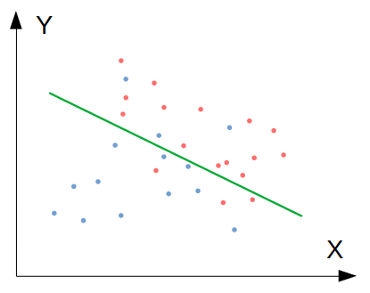
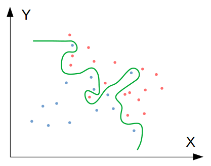
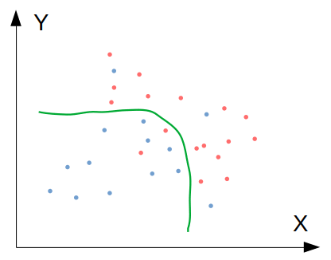

โดย ชิตพงษ์ กิตตินราดร | ธันวาคม 2562
สมมุติว่าเราเทรนโมเดล Binary classification (มีสองคำตอบ คือ "ใช่" กับ "ไม่ใช่") แล้วได้คะแนนความแม่นยำดังนี้:
จะเห็นว่าคะแนนค่อนข้างต่ำ คือถ้าให้มนุษย์จำแนกอาจจะถูกมากกว่า 90% แต่โมเดลจำแนกถูกเพียง 75% เราเรียกว่าโมเดลนี้มีปัญหา Bias ซึ่งแสดงได้โดยภาพนี้:

ภาพที่ 1: โมเดลที่มีปัญหา Bias เพราะ Underfit ข้อมูล Train set
ปัญหานี้เกิดจากการที่โมเดลเราไม่สามารถฟิตกับข้อมูลได้ดีเท่าที่ควร เรียกว่าโมเดลมี Bias หรือโมเดลนั้น Underfit ข้อมูล โดยในภาพจะเห็นว่าโมเดลได้ลากเส้นแบ่งการตัดสินใจ แต่ในโซนสีน้ำเงิน (สมมุติว่าแทนคำตอบว่า "ใช่") กลับมีข้อมูลสีแดงประเภท "ไม่ใช่" อยู่ และกลับกัน ในโซนแดง ก็มีข้อมูลสีน้ำเงินอยู่หลายรายการ
สาเหตุของปัญหา Bias มีหลักๆ ดังนี้:
สมมุติว่าเราพยายามแก้ปัจจัยเหล่านี้ เช่น การเพิ่มจำนวน Training set, การลด Learning rate, การเลือก Algorithm ที่เหมาะสมขึ้น แล้วลองเทรนโมเดลใหม่ อาจพบว่าได้คะแนนความแม่นยำดังนี้:
จะเห็นว่า คราวนี้เราได้ความแม่นยำของ Train set สูงขึ้นจนเกือบเท่ามนุษย์แล้ว แต่เมื่อนำไปทดสอบกับ Test set ซึ่งเป็นข้อมูลชุดที่โมเดลไม่เคยเห็น พบว่าได้ความแม่นยำเพียง 65% เท่านั้น สถานการณ์นี้แสดงเป็นภาพได้ดังนี้:

ภาพที่ 2: โมเดลที่มีปัญหา Variance เพราะ Overfit ข้อมูล Train set
ปัญหานี้เรียกว่า โมเดลมี Variance สูง หรือโมเดลได้ Overfit ข้อมูล ซึ่งมีลักษณะกลับกันกับปัญหา Bias/underfit กล่าวคือ โมเดลพยายาม "รู้ดี" จนเกินไป ด้วยการฟิตตัวเองเข้ากับข้อมูลใน Train set ทุกๆ รายการอย่างถูกต้อง แต่การทำอย่างนี้ไม่ได้แปลว่าขอบเขตการตัดสินใจที่เกิดขึ้นจะฟิตกับข้อมูลอื่นๆ ที่โมเดลไม่เคยเห็น ซึ่งทดสอบได้จากการพยากรณ์ด้วย Test set
สาเหตุของปัญหา Variance มีหลักๆ ดังนี้:
ดังนั้น ทางแก้คือให้พิจารณาว่า Test set มีขนาดเพียงพอหรือไม่ และมีการกระจายตัวเหมือน Train set หรือไม่ ถ้าสองปัจจัยนี้ผ่าน ก็มาถึงการใช้เทคนิค Regularisation ซึ่งเมื่อทำแล้ว ก็น่าจะได้โมเดลที่มีคะแนนประมาณนี้:
สังเกตว่าคะแนน Train set อาจจะลดลงเล็กน้อย เพราะโมเดลถูกชดเชยน้ำหนัก ทำให้ความแม่นยำบน Train set ลดลง แต่ลดความซับซ้อนลงจนทำให้ฟิตกับข้อมูล Test set ที่โมเดลไม่เคยเห็นได้ดียิ่งขึ้น ลองดูภาพประกอบ:

ภาพที่ 3: โมเดลที่ "กำลังดี" (Just right model)
เป้าหมายของเรา คือการสร้างโมเดลที่ "กำลังดี" แบบนี้ ซึ่งวิธีที่ได้ผลที่สุดและควรลองเป็นอันดับแรก (เมื่อมั่นใจแล้วว่า Test set ไม่ได้เป็นปัญหา) คือ Regularisation
Regularisation คือเทคนิคการ "ชดเชยน้ำหนัก" ของ Parameter ต่างๆ ในโมเดล ซึ่งจะทำให้น้ำหนักของ Parameter ต่างๆ ลดลง ส่งผลให้โมเดลลดความซับซ้อนลง จึงเพิ่มโอกาสที่โมเดลจะสามารถฟิตกับข้อมูลที่ไม่เคยมองเห็น เช่น Test set ได้มากขึ้น เราเรียกสถานการณ์แบบนี้ว่าโมเดลสามารถ Generalise ได้ดี
การชดเชยน้ำหนักของ Algorithm แต่ละตัวมีหลักการคล้ายกัน ตัวอย่างเช่น Linear regression ที่ปกติมี Cost function ดังนี้:
การทำ Regularisation จะเปลี่ยน Cost function ให้เป็นดังนี้:
และปรับ Gradient descent เล็กน้อย ยกเว้น ที่ไม่ต้อง Regularise:
ทำซ้ำจนกระทั่งผลลัพธ์ล่าสุดไม่เปลี่ยนแปลงจากผลลัพธ์ครั้งก่อน:
สังเกตว่าเราเพิ่ม เข้าไปใน Cost function ซึ่งทั้ง Term นี้มีค่าเป็นบวกเสมอ จึงเป็นการบีบให้ ต้องมีขนาดเล็กลง โดยการที่จะเป็นเช่นนั้นได้ หมายความว่า จะต้องมีขนาดเล็กลง ซึ่งก็หมายความว่าทางเดียวที่จะทำอย่างนั้นได้คือน้ำหนัก (หรือ ในบทที่ 2) จะต้องน้อยลงนั่นเอง โดยการลดขนาด ลง จะเกิดขึ้นในอัตราคงที่ทุกๆ Iteration ดังนั้นเราอาจเรียก Term นี้ว่า Weight decay term ก็ได้
เรื่อง Regularisation มีรายละเอียดที่ควรรู้ดังนี้:
C แทน ซึ่งเป็น Inverse ของ ดังนั่น เวลากำหนด C ยิ่งน้อย ยิ่งชดเชยมาก
Ridge ใน sklearn.linear_model
Lasso ใน sklearn.linear_modelr ว่าจะใช้ Ridge กี่ส่วน Lasso กี่ส่วน โดย r = 0 จะได้ Ridge ทั้งหมด ส่วน r = 1 จะได้ Lasso ทั้งหมด สามารถเรียกใช้ได้ด้วย Class ElasticNet ใน sklearn.linear_modelเป็นอันว่าเราได้รู้จักปัญหา Bias / Variance และรู้วิธีแก้ปัญหาด้วย Regularisation แล้ว ตอนนี้เราก็มีความรู้และเครื่องมือสำหรับการสร้าง Machine learning model ด้วย Algorithm อื่นๆ ซึ่งจะนำเสนอในบทต่อไป
หน้าแรก | บทที่ 6 Feature Scaling | บทที่ 8: Support Vector Machines